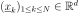
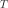
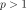
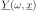
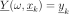
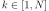
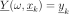
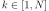

KrigingAlgorithm¶
-
class
KrigingAlgorithm(*args)¶ Kriging algorithm.
- Available constructors:
KrigingAlgorithm(inputSample, outputSample, covarianceModel, basis, normalize=True)
KrigingAlgorithm(inputSample, inputTransformation, outputSample, covarianceModel, basis)
KrigingAlgorithm(inputSample, outputSample, covarianceModel, basisCollection, normalize=True)
KrigingAlgorithm(inputSample, inputTransformation, outputSample, covarianceModel, basisCollection)
Parameters: inputSample, outputSample : 2-d sequence of float
The samples  and
 upon which the meta-model is built.
upon which the meta-model is built.inputTransformation :
FunctionFunction  used to normalize the input sample.
If used, the meta model is built on the transformed data.
basis :
BasisFunctional basis to estimate the trend (universal kriging): .
If , the same basis is used for each marginal output.
covarianceModel :
CovarianceModelCovariance model used for the underlying Gaussian process assumption.
basisCollection : sequence of
BasisCollection of
 functional basis: one basis for each marginal output: . If the sequence is empty, no trend coefficient is estimated (simple kriging).
functional basis: one basis for each marginal output: . If the sequence is empty, no trend coefficient is estimated (simple kriging).normalize : bool, optional
Indicates whether the input sample has to be normalized.
OpenTURNS uses the transformation fixed by the User in inputTransformation or the empirical mean and variance of the input sample. Default is set in resource map key GeneralLinearModelAlgorithm-NormalizeData
Notes
We suppose we have a sample where for all k, with the model.
The meta model Kriging is based on the same principles as those of the generalized linear model: it assumes that the sample is considered as the trace of a Gaussian process  on . The Gaussian process is defined by:
(1)¶
where:
with
 and
and  the trend functions.
the trend functions. is a Gaussian process of dimension p with zero mean and covariance function (see
is a Gaussian process of dimension p with zero mean and covariance function (see CovarianceModelfor the notations).The estimation of the parameters are made by the
GeneralLinearModelAlgorithmclass.The Kriging algorithm makes the generalized linear model interpolary on the input samples. The Kriging meta model
 is defined by:
is defined by:where
 is the condition  for each .
is the condition  for each .(1) writes:
where is a matrix in and .
A known centered gaussian observation noise can be taken into account with
setNoise():Examples
Create the model
 and the samples:
and the samples:>>> import openturns as ot >>> # use of Hmat implementation >>> # ot.ResourceMap.Set('KrigingAlgorithm-LinearAlgebra', 'HMAT') >>> f = ot.SymbolicFunction(['x'], ['x * sin(x)']) >>> inputSample = ot.Sample([[1.0], [3.0], [5.0], [6.0], [7.0], [8.0]]) >>> outputSample = f(inputSample)
Create the algorithm:
>>> basis = ot.ConstantBasisFactory().build() >>> covarianceModel = ot.SquaredExponential(1) >>> algo = ot.KrigingAlgorithm(inputSample, outputSample, covarianceModel, basis) >>> algo.run()
Get the resulting meta model:
>>> result = algo.getResult() >>> metamodel = result.getMetaModel()
Methods
getClassName()Accessor to the object’s name. getDistribution()Accessor to the joint probability density function of the physical input vector. getId()Accessor to the object’s id. getInputSample()Accessor to the input sample. getName()Accessor to the object’s name. getNoise()Observation noise variance accessor. getOptimizationAlgorithm()Accessor to solver used to optimize the covariance model parameters. getOptimizationBounds()Accessor to the optimization bounds. getOptimizeParameters()Accessor to the covariance model parameters optimization flag. getOutputSample()Accessor to the output sample. getReducedLogLikelihoodFunction()Accessor to the reduced log-likelihood function that writes as argument of the covariance’s model parameters. getResult()Get the results of the metamodel computation. getShadowedId()Accessor to the object’s shadowed id. getVisibility()Accessor to the object’s visibility state. hasName()Test if the object is named. hasVisibleName()Test if the object has a distinguishable name. run()Compute the response surface. setDistribution(distribution)Accessor to the joint probability density function of the physical input vector. setName(name)Accessor to the object’s name. setNoise(noise)Observation noise variance accessor. setOptimizationAlgorithm(solver)Accessor to the solver used to optimize the covariance model parameters. setOptimizationBounds(optimizationBounds)Accessor to the optimization bounds. setOptimizeParameters(optimizeParameters)Accessor to the covariance model parameters optimization flag. setShadowedId(id)Accessor to the object’s shadowed id. setVisibility(visible)Accessor to the object’s visibility state. -
__init__(*args)¶ x.__init__(…) initializes x; see help(type(x)) for signature
-
getClassName()¶ Accessor to the object’s name.
Returns: class_name : str
The object class name (object.__class__.__name__).
-
getDistribution()¶ Accessor to the joint probability density function of the physical input vector.
Returns: distribution :
DistributionJoint probability density function of the physical input vector.
-
getId()¶ Accessor to the object’s id.
Returns: id : int
Internal unique identifier.
-
getName()¶ Accessor to the object’s name.
Returns: name : str
The name of the object.
-
getNoise()¶ Observation noise variance accessor.
Returns: noise : sequence of positive float
The noise variance of each output value.
-
getOptimizationAlgorithm()¶ Accessor to solver used to optimize the covariance model parameters.
Returns: algorithm :
OptimizationAlgorithmSolver used to optimize the covariance model parameters.
-
getOptimizationBounds()¶ Accessor to the optimization bounds.
Returns: problem :
IntervalThe bounds used for numerical optimization of the likelihood.
-
getOptimizeParameters()¶ Accessor to the covariance model parameters optimization flag.
Returns: optimizeParameters : bool
Whether to optimize the covariance model parameters.
-
getReducedLogLikelihoodFunction()¶ Accessor to the reduced log-likelihood function that writes as argument of the covariance’s model parameters.
Returns: reducedLogLikelihood :
FunctionThe reduced log-likelihood function as a function of .
Notes
The reduced log-likelihood function may be useful for some pre/postprocessing: vizuaisation of the maximizer, use of an external optimizers to maximize the reduced log-likelihood etc.
Examples
Create the model
and the samples:>>> import openturns as ot >>> f = ot.SymbolicFunction(['x0'], ['x0 * sin(x0)']) >>> inputSample = ot.Sample([[1.0], [3.0], [5.0], [6.0], [7.0], [8.0]]) >>> outputSample = f(inputSample)
Create the algorithm:
>>> basis = ot.ConstantBasisFactory().build() >>> covarianceModel = ot.SquaredExponential(1) >>> algo = ot.KrigingAlgorithm(inputSample, outputSample, covarianceModel, basis) >>> algo.run()
Get the reduced log-likelihood function:
>>> reducedLogLikelihoodFunction = algo.getReducedLogLikelihoodFunction()
-
getResult()¶ Get the results of the metamodel computation.
Returns: result :
KrigingResultStructure containing all the results obtained after computation and created by the method
run().
-
getShadowedId()¶ Accessor to the object’s shadowed id.
Returns: id : int
Internal unique identifier.
-
getVisibility()¶ Accessor to the object’s visibility state.
Returns: visible : bool
Visibility flag.
-
hasName()¶ Test if the object is named.
Returns: hasName : bool
True if the name is not empty.
-
hasVisibleName()¶ Test if the object has a distinguishable name.
Returns: hasVisibleName : bool
True if the name is not empty and not the default one.
-
run()¶ Compute the response surface.
Notes
It computes the kriging response surface and creates a
KrigingResultstructure containing all the results.
-
setDistribution(distribution)¶ Accessor to the joint probability density function of the physical input vector.
Parameters: distribution :
DistributionJoint probability density function of the physical input vector.
-
setName(name)¶ Accessor to the object’s name.
Parameters: name : str
The name of the object.
-
setNoise(noise)¶ Observation noise variance accessor.
Parameters: noise : sequence of positive float
The noise variance of each output value.
-
setOptimizationAlgorithm(solver)¶ Accessor to the solver used to optimize the covariance model parameters.
Parameters: algorithm :
OptimizationAlgorithmSolver used to optimize the covariance model parameters.
Examples
Create the model
and the samples:>>> import openturns as ot >>> input_data = ot.Uniform(-1.0, 2.0).getSample(10) >>> model = ot.SymbolicFunction(['x'], ['x-1+sin(_pi*x/(1+0.25*x^2))']) >>> output_data = model(input_data)
Create the Kriging algorithm with the optimizer option:
>>> basis = ot.Basis([ot.SymbolicFunction(['x'], ['0.0'])]) >>> thetaInit = 1.0 >>> covariance = ot.GeneralizedExponential([thetaInit], 2.0) >>> bounds = ot.Interval(1e-2,1e2) >>> algo = ot.KrigingAlgorithm(input_data, output_data, covariance, basis) >>> algo.setOptimizationBounds(bounds)
-
setOptimizationBounds(optimizationBounds)¶ Accessor to the optimization bounds.
Parameters: problem :
IntervalThe bounds used for numerical optimization of the likelihood.
-
setOptimizeParameters(optimizeParameters)¶ Accessor to the covariance model parameters optimization flag.
Parameters: optimizeParameters : bool
Whether to optimize the covariance model parameters.
-
setShadowedId(id)¶ Accessor to the object’s shadowed id.
Parameters: id : int
Internal unique identifier.
-
setVisibility(visible)¶ Accessor to the object’s visibility state.
Parameters: visible : bool
Visibility flag.